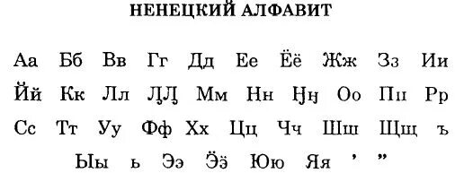

Язык ненцев
Ненецкий язык относится к самодийской группе уральской языковой семьи. Он имеет два диалекта: северный и южный.
Ненецкий язык сохраняет свою уникальность благодаря преданиям и специфическим терминам, касающимся природы и традиционного образа жизни. В последние годы наблюдается повышение интереса к изучению языка среди молодёжи.
